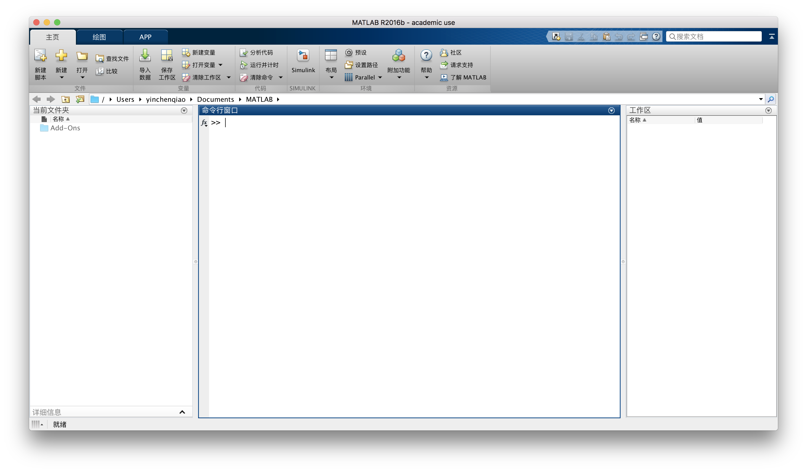

2 开始 2017.10.08
安装
北大正版软件共享平台（software.pku.edu.cn）提供了MATLAB的下载地址，下载之后参照software上的使用帮助完成安装和激活。由于MATLAB文件较大，请确保计算机本地有足够大的磁盘空间。
界面
在MATLAB的主界面中，有三个选项卡和三个窗口。三个选项卡分别为主页、绘图、APP。其中，主页通常进行主要常用操作，绘图用于绘制各种二维、三维、四维统计图，APP中有多项扩展功能。三个窗口分别是当前文件夹、命令行窗口和工作区。其中，当前文件夹用于显示当前目录下的文件，命令行窗口用于编写命令和显示结果，工作区用来显示各种变量及其类型和值。由于作者习惯采用命令行窗口操作MATLAB，因此在接下来的教程中将不再介绍三个选项卡的操作。
命令行中的">>"代表MATLAB准备就绪，可以输入命令。输入完毕之后，按Enter键，MATLAB将执行新输入的一条命令。
初试MATLAB
（1）在命令行中输入"x = 1 + 1"，按Enter键，可以在工作区看到新生成的变量x，其值为2，命令行返回：
x =
2
（2）在命令行中输入"y = -pi"，按Enter键，可以在工作区看到新生成的变量y，其值为-3.1416，命令行返回：
y =
-3.1416
（3）在命令行输入"z = x + y"，按Enter键，可以在工作区看到新生成的变量z，其值为-1.1416，命令行返回：
z =
-1.1416
当命令后面有分号（半角符号）的时候，运行后命令行不会返回计算结果。如果没有分号，则运行后命令行返回计算结果。读者可以在上述三条测试指令后面加上分号再运行，比较命令后面有分号和没有分号的差异。
帮助系统
MATLAB中的函数一般都有使用帮助和函数功能说明，在MATLAB窗口中，可以通过一些命令来获取帮助信息，如help、lookfor、which、doc、get、type等。常用的命令是help，其调用方式为：
help 函数名称
如果要了解sin函数的使用方法，可以在命令行中输入"help sin"，得到结果为：
sin Sine of argument in radians.
sin(X) is the sine of the elements of X.
See also asin, sind.
sin 的参考页
名为 sin 的其他函数